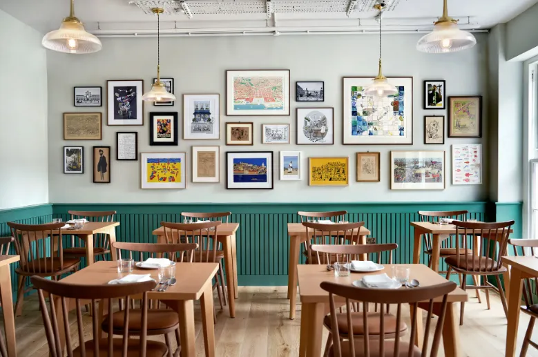

Welcome to Haukai Restaurant
About Us
Welcome to our restaurant, where we proudly celebrate the unique flavors and traditions of Māori and Pakeha cuisine. Our menu features a diverse range of dishes that draw inspiration from both indigenous and European culinary traditions, bringing together the best of both worlds. Our chefs are passionate about using fresh, local ingredients to create dishes that are both delicious and true to their cultural roots. We look forward to sharing a taste of Māori and Pakeha culture with you.
Karakia mō te Kai
This karakia is a traditional blessing for our food, presented below in Māori and English.
Nau mai e ngā hua,
o te wao,
o te ngakina,
o te wai tai,
o te wai Māori.
Nā Tane,
Nā Rongo,
Nā Tangaroa,
Nā Maru.
Ko Ranginui e tū iho nei,
Ko Papatūānuku e takoto nei.
Tūturu o whiti ka whakamaua kia tina! TINA!
Hāumi e! Hui e! TĀIKI E!
Blessing of Food
Welcome the gifts of food
from the sacred forests,
from the cultivated gardens,
from the sea,
from the fresh waters.
The food of Tane,
of Rongo,
of Tangaroa,
of Maru.
I acknowledge the sky father who is above me,
the earth mother who lies beneath me.
Let this be my commitment to all!
Draw together! Affirm!